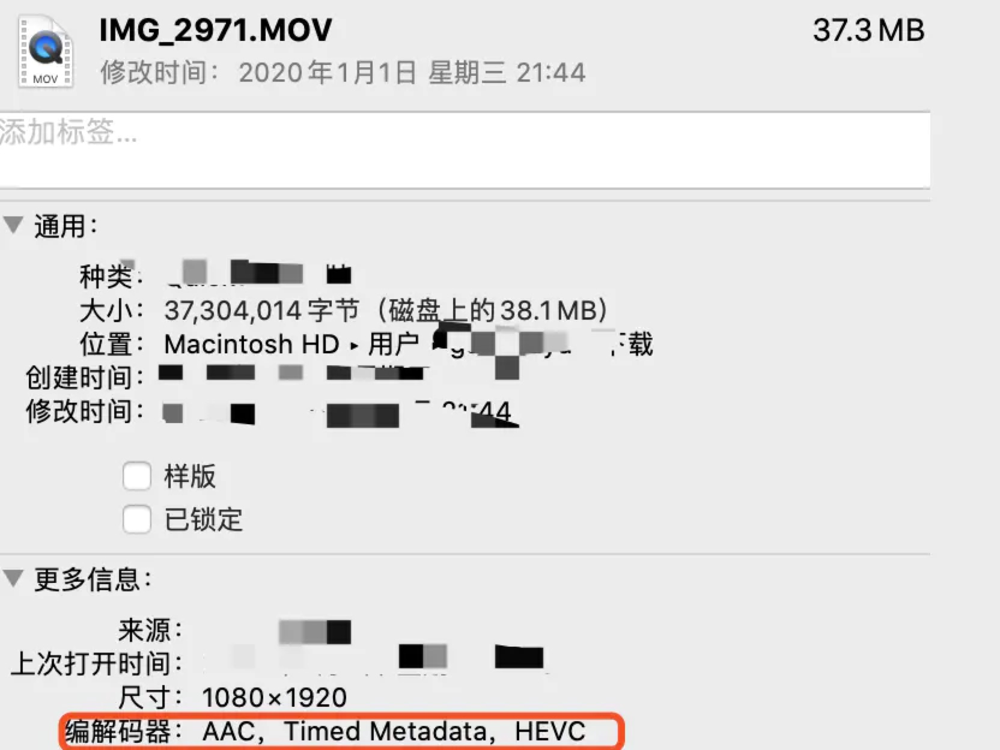
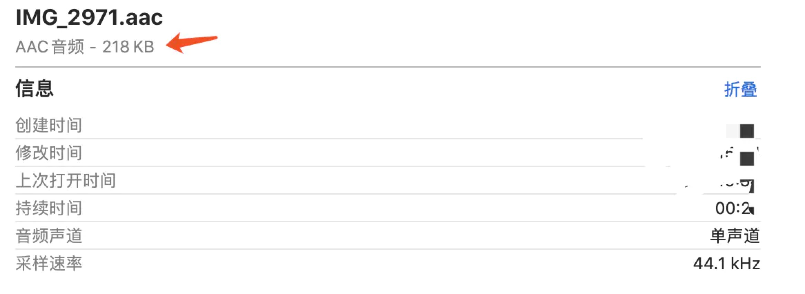

工作原因，接触到音视频开发，作为移动开发者，掌握必要的音视频概念是很必要的。此篇记录一些音视频开发中常用的术语，做一些简单的扫盲工作。
先上两个经典的音视频项目地址，供参考研究：
ijkPlayer:https://github.com/bilibili/ijkplayer
GSYVideoPlayer:https://github.com/CarGuo/GSYVideoPlayer
一、基本概念
首先，如下图所示是一个 .MOV 的视频文件，可以看到更多信息栏里编码器有 AAC 、HEVC ，而这个就是视频的音频编码和视频编码，而 MOV 其实就是封装协议，这其实就是我们接下来要介绍的基本概念。

一般情况下，视频流从加载都准备播放是需要经过解协议、解封装、解编码这样的过程，其中协议指的就是流媒体协议；封装是的是视频的封装格式；编码又分为视频编码和音频编码。
协议一般有 HTTP 、RTSP、RTMP 等，我们就最常见的就是 HTTP 网络协议，而 RTSP 和 RTMP 一般用于直播流或支持带有控制信令的常见，比如远程监控。
视频封装协议指的是我们常见的 MP4 、AVI 、RMVB 、MKV、TS、FLV 等常见后缀格式，它们所表示的就是多媒体的封装协议，就是在传输过程中把音频和视频打包都一起的封装，所以播放前是需要把这部分内容解开，提取出对应音频编码和视频编码。
所以如果以后有人问你，你是视频编码是什么，专业的你不能再回答 “我的视频编码是 MP4” 这样的回复哟。
1、音频编码
音频编码指的是音频数据的编码方式，常见的如：MP3、 PCM、WAV、AAC、AC-3 等，因为音频的原始数据大小一般不适合直接传入，比如原始大小一般可以按照采样率 声道数 样本格式 去计算，假设前面那个 MOV 的音频采样率是 44100 、样本格式是 16 bit 、单声道、24 秒，那么它原始音频大小应该是44100 * 16 * 1 * 24 / 8 ≈ 2MB
而实际将音频信息提取出来的大小，如下图大概只有 200 多K，这就是音频编码的作用。

所以一般都会音频传输会采用各种编码格式进行压缩和去冗余，其中比如 WAV/PCM 编码的音频质量比较好，但是体积会比较大；MP3 有损压缩能在音频质量还可以的情况下压缩音频的体积；AAC 也是有损压缩，但是又有分有 LC-AAC、HE-AAC等。
2、视频编码
视频编码指的就是画面图像的编码压缩方式，一般有 H263、H264、HEVC（H265）、MPEG-2 、MPEG-4 等，其中H264 是目前比较常见的编码方式。
通常情况下我们理解的画面是 RGB 组合出来，而目前视频领域可能更多使用 YUV 格式，其中 Y 表示的是亮度（灰度），而 U 和 V表示的是色度（饱和度）。
YUV 是对 RGB 的特殊处理和叠加来获取颜色，比如 YUV420 可以理解对色度以 2：1 的抽样率进行存储，然后亮度透过色度来显示画面，更多 YUV 的这里就不展开讨论，而为什么使用 YUV 其中有一点因素就是为了兼容以前的黑白电视。
为什么不直接用原始 YUV ？这里假设上面的 MOV 视频直接使用 YUV420 的格式，那么一帧的大小就会是：1080 * 1920 * 1 + 1080 * 1920 * 0.5 = 2.9MB
如果在这个基础上，算上帧率（30）和一个视频的时长（一小时），那一部视频原始大小就会是天文数字，这样的情况明显不符合网络传输，所以才有了视频编码用于压缩图像。
在视频压缩里，又有几个概念需要知道，比如：
- IPB 帧是一种常见的帧压缩方法，其中 I 帧属于关键帧是每个画面的参考帧； P 帧是前向预测帧；B 帧是双向预测帧。简单来说就是 I 帧自己就可以得到一个完整画面，而 P 帧需要前面的 I 帧或者 P 帧来帮助解码得到一个完整画面，而 B 帧则需要前面的 I/P 帧或者后面的 P 帧来协助形成一个画面。
- 所以 I 帧是很关键的存在，压缩 I 帧就可以很容易压制掉空间的大小，而压缩 P/B 帧可以压缩掉时间上的冗余信息 。所以在视频 seek 的时候，I 帧很关键，如果视频 seek 之后发生往前的跳动，那很可能就是你的视频压缩得太厉害了。
- 还有一个叫 IDR 帧的概念，因为 H264 采用的是多帧预测，导致 I 帧不能作为独立的观察条件，所以多出一个叫 IDR 帧的特殊 I 帧用于参考，IDR 帧最关键的概念就是：在解码器过程中一旦收到 IDR 帧，就会立即清空参考帧缓冲区，并将IDR帧作为被参考帧。
在视频解码里还有一个叫 DTS（Decoding Time Stamp） 和 PTS（Presentation Time Stamp）的存在，DTS主要用于视频的解码，PTS主要用于在解码阶段对视频进行同步和输出。因为视频包里面数据解码不是连续的，而是需要通过解码数据源得到的 DTS，才 决定以包应该在什么时候被解码，而得到的PTS 决定了解码后的图片什么时候被绘制。
GOP（Group Of Picture）就是两个 I 帧之间的距离，一般 GOP 设置得越大，画面的效果就会越好，到那时需要解码的时间就会越长。 所以如果码率固定而 GOP 值越大，P/B帧 数量会越多，画面质量就会越高。
二、Q&A
首先说一个经常被问的问题：ffmpeg 全称是 Fast Forward Mpeg ，所以读法为 (ef,ef,’em,peg) ，一般情况下 ffmpeg 使用的是软解码，也即是纯 CPU 解码；而使用平台的 MediaCodec 播放的是硬解码，也就是支持 GPU 协助。
问题1:“为什么同一个视频机器A可以播机器B不可以？”
这个问题很大可能就是使用了 MediaCodec 的硬解码播放，不同手机和系统版本，对于硬解码的支持是不一样的。
问题2:“为什么都是 ffmpeg 播放，vlc 可以播放，ijkplayer 却不行？”
这是因为 ffmpeg 是支持根据配置打包的，因为很多时候你并不需要那么多，比如在 configure 文件中打开和关闭某些格式的支持来达到按需打包的目的，所以同样是 ffmpeg 不同项目打包支持的程度可能都不同。1
2
3
4
5
6
7
8
9
10
11
12
13
14
15
16
17
18
19
20
21
22
23
24
25
26支持wav
--enable-libwavpack
--enable-muxer=wav
--enable-demuxer=wav
--enable-decoder=wavpack
--enable-encoder=wavpack
--enable-decoder=wav
--enable-encoder=wav
--enable-encoder=pcm_s16le
--enable-decoder=pcm_s16le
--enable-encoder=pcm_u8
--enable-decoder=pcm_u8
--enable-muxer=pcm_u8
--enable-demuxer=pcm_u8
支持mp2
--enable-encoder=mp2
--enable-decoder=mp2
--enable-muxer=mp2
--enable-decoder=mp2float
--enable-encoder=mp2fixed
支持 h265
--enable-decoder=hevc
复制代码问题3：“为什么我的视频缓冲了，在 seek 之后还需要重新请求？”
这就需要解释缓存和缓冲的区别：
缓冲：就像在倒垃圾的时候，不可能一有垃圾马上跑去垃圾堆倒，而是先把垃圾倒到垃圾桶，垃圾桶满了再一起倒到垃堆。因为缓冲是在内存中，不可在内存中把整个视频都缓冲进去，所以一般情况下你看到的缓冲都是一段一段的临时数据，一个缓冲块是处于不断地加载又不断清除的过程。
缓存: 缓存的解释就简单多了，就是把视频在播放的时候一边下载到本地，这样在缓存区域内的数据就不需要发生二次请求。
问题4：“为什么我的视频在拖拽之后会出现跳动？”
其实前面已经解释过了，这和视频的关键帧有关系，同时也和 ffmpeg 选择的兼容策略有关系，比如使用 -accurate_seek 可以让位于跳转点和 position 之间的额外部分将被解码并且丢弃，对应 ijk 中就是 enable-accurate-seek 的配置。
问题5：“为什么我的视频会出现音视频不同步？”
首选确定你的播放器使用的音视频同步协议是什么，比如 ijkplayer 是使用音频作为同步时钟，如果在 ijkplayer 里 在出现音视频不同步，那么很可能就是视频的码率或者帧率太高，可以尝试使用使用 framedrop 丢帧或者开启硬解码支持。
问题6：“为什么我的视频会出现大小和方向不对？”
一般情况下视频信息里是带有旋转角度的，比如 Android 手机上录制的视频就可能带有旋转角度，所以在布局和绘制时需要把旋转角度如： 270，90 这样的角度考虑上。
另外视频在获取大小还会有 Width Height Ratio 的信息也就是宽高比，例如这个信息在 ijkplayer 上是以 videoSarNum / videoSarDen 得到的，只有把宽高比和视频的宽高一起计算，才能获取到真正的展示宽高。
问题7：“为什么我的视频会出现黑边？”
这个问题其实就是常识性问题，面对不同尺寸不同分辨率的平台，视频显示是根据你给定的 Surface 大小去进行显示，所以你可以选择使用拉伸、裁剪、适应高度、适应宽度等不同布局模式去配置你的绘制控件，这样就可以达到你需要的控制黑边的场景。
诸如此类的问题还有 “如何获取某个时间戳的图像”、“如何同时播放几个视频”、“如何实现播放滤镜”、“如何实现倍速播放” 等问题，这里就不一一展开，感兴趣的可以去 GSYVideoPlayer 的 issue 或者搜索相关的 ffmpeg 实现。
使用场景
最后讲一下音视频开发的使用场景，为什么要说这个呢？
因为很多时候开发者可能以为“不就是接个播放器 SDK 放个 Url 的功夫吗？” 其实还真不是，做过音视频开发的应该都深有体会。
1、首先在做音视频开发时，要确定好自己需要支持的封装协议、视频编码、音频编码格式，因为编码格式千万种，一般情况下你不可能全都支持，所以首先要在需求内确定好需要支持的格式范围。
2、如果存在用户自主上传视频的场景，最好还要在服务端提供转格式与转码率等功能。因为在服务端判断视频格式并转码可以规范编码统一，这能够减少客户端端因为编解码失败无法播放的问题；另外提供同一视频不同码率的链接，可以在不同手机型号和系统上能够拥有更好的播放体验，减少前面说过的因为码率太高出现音视频不同步或者卡顿的问题。
3、在网络播放中存在很多场景，比如播放过程中网络环境出现变化，是从 4G 转化为 Wifi 还是从 Wifi 转到了 4G 的场景 ，这里面涉及到两个点：第一是网络环境发生改变，那么原本的拉流通道其实已经断开，这时候需要重新启动一个新的连接来替换旧的播放内核，才能实现继续播放；第二就是 Wifi 到 4G 之间的环境发生改变时，需要给用户提示并确定是否执行后续操作。
4、还有比如当视频画面需要从列表切换到详情页，需要从原本的容器切换到另外一个可渲染容器时，需要在播放内核不暂停的情况下去设置不同的 Surface 来达到切换的目的；片头广告的播放与视频内容的预加载需要两个不同的请求处理等等的场景。